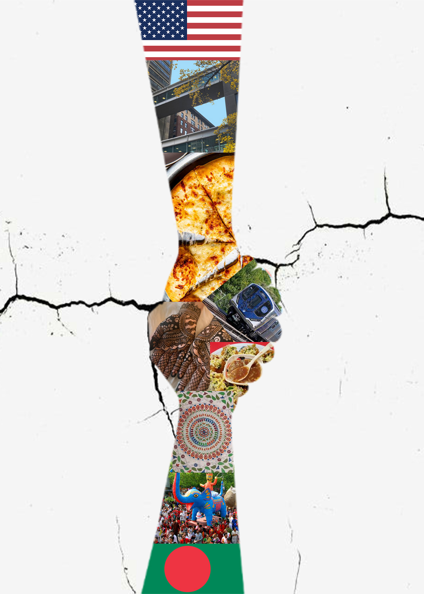

The purpose of this collage is to illustrate the inner conflict I face trying to balance my roots in Bangladesh and my life here. Ever since my family and I immigrated here, I have always felt the difficulty of staying true to my culture while trying to fit into a new environment with so many people of different backgrounds. To express this, I created a collage to appreciate my younger self and the inner turmoils she faced while trying to stay loyal to both identities. I used the clipping mask tool to show the most important parts of my life in Bangladesh, such as doing henna and going to the Pohela Boisakh parade (the Bengali New Year's parade). I also showed some of the important parts of my life here, such as going to college or having pizza with friends. I masked these all to a picture of two hands clasped together to show how, even though my identities are different, they come together to make who I am today. In the background, I used small, closing cracks to show that even though I'm still working on finding that perfect balance between my identities, I'm doing better than before.
